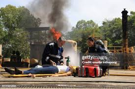

“We didn’t know where to start after the fire.”
After a late-night kitchen fire spread through their apartment, the Lopez family left with only the clothes they were wearing. Within 24 hours, RR Foundation. provided emergency care kits, grocery support, and connections to a short-term housing partner.
Over the next few weeks, our team checked in regularly, helping them navigate paperwork, understand insurance options, and access school supplies for their children so they could return to class.